Crédits photos et musique
Les sceaux, rubans, broderies, dentelle, icônes, roses, lin et la photo de jardin des versions V9 et V10 sont des images générées par IA fournies par les mariés. Les photographies ci-dessous proviennent de Wikimedia Commons et sont utilisées sous leur licence Creative Commons respective. Les illustrations vectorielles ont été dessinées pour ce site.
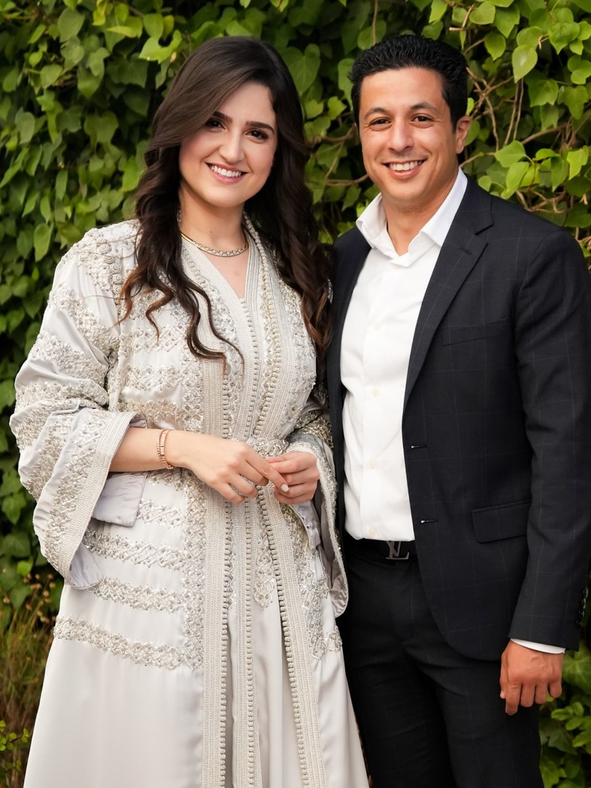
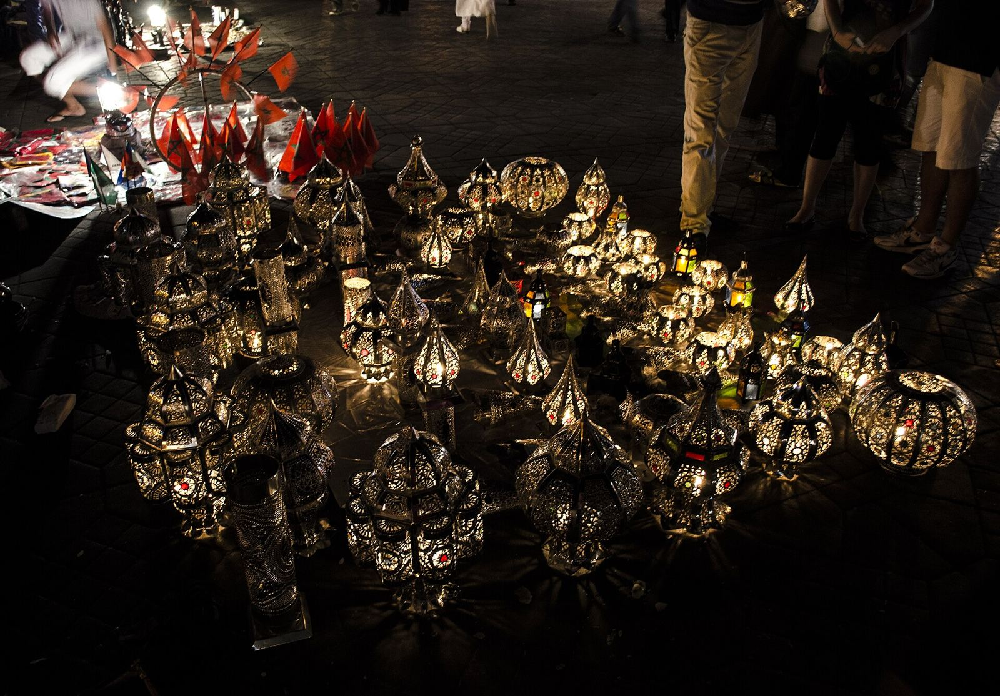
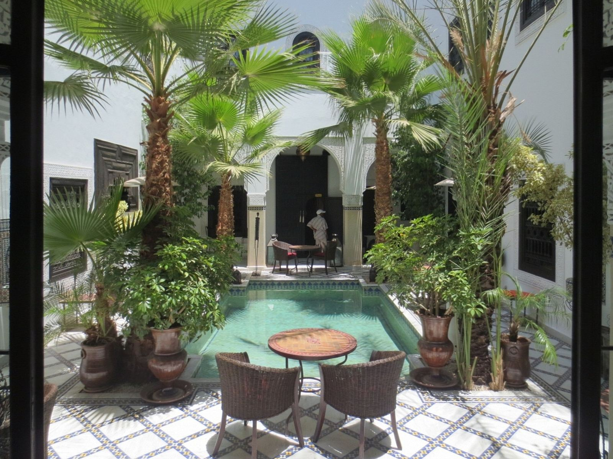
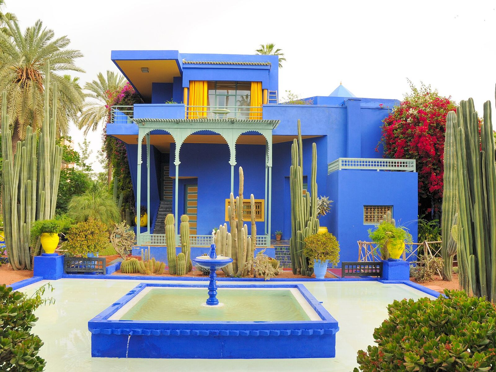
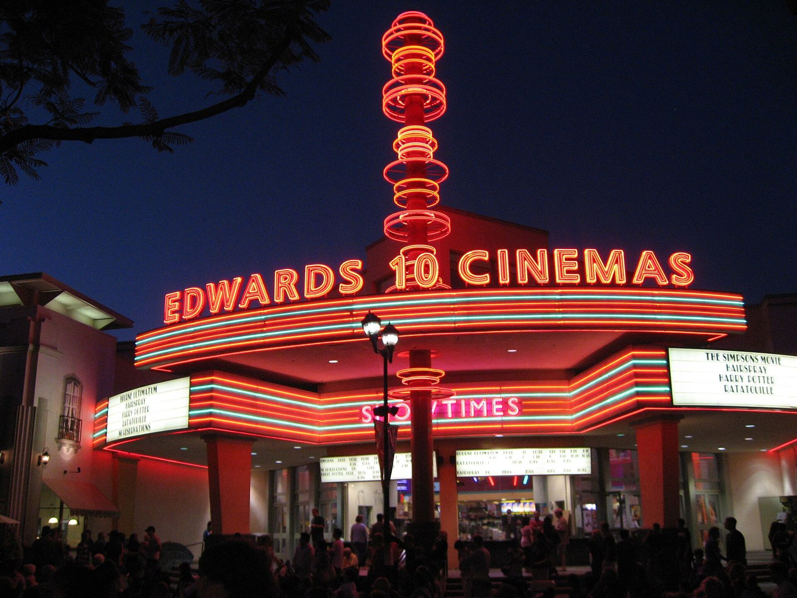
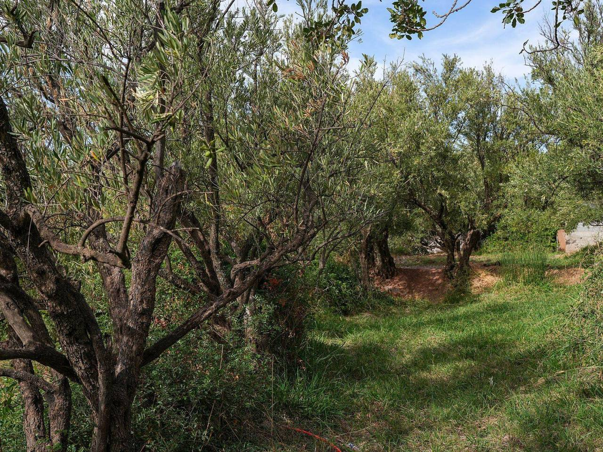
V5 · section LieuIrrigated Olive Grove Ouirgane Oct25 A7CR 08582.jpgAuteur : This Photo was taken by Timothy A. Gonsalves. Feel free to use my photos, but please mention me as the author. I would much appreciate if you send me an email tagooty@yahoo.com or write on my talk page, for my information. Please contact me before commercial use.
Please do not upload an edited image here without consulting me. I would like to make corrections only at my own source to ensure that the changes improve the image and are preserved.Otherwise you may upload an edited image with a new name. Please use one of the templates derivative or extract. · Licence : CC BY-SA 4.0Source Wikimedia Commons 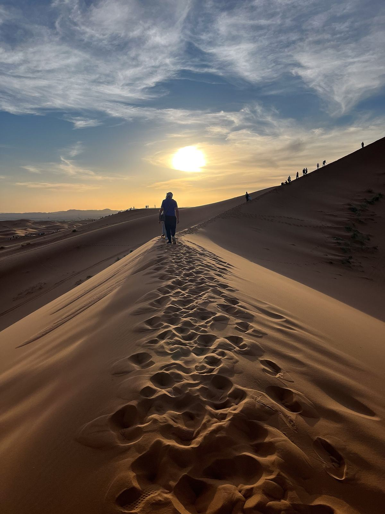
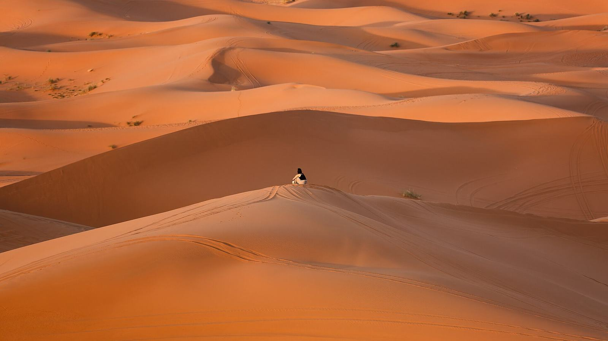
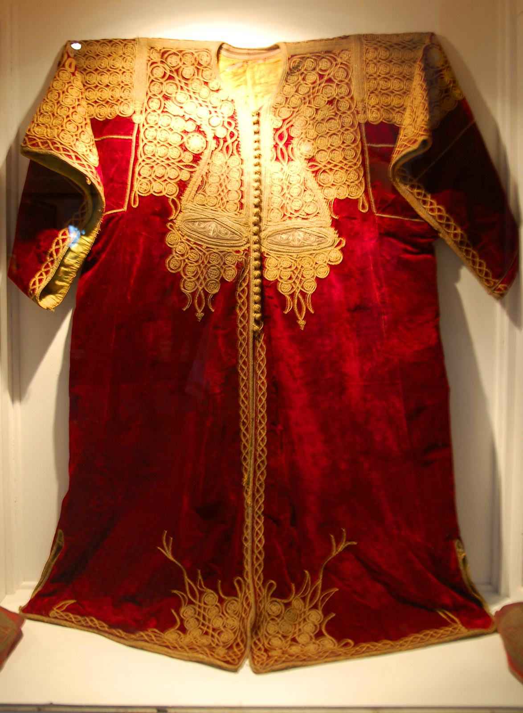
V8 · en-tête et section LieuMoroccan Caftan, Bahia Palace, Marrakech, Morocco.jpgAuteur : No machine-readable author provided. Lviatour assumed (based on copyright claims). · Licence : CC BY-SA 3.0Source Wikimedia Commons 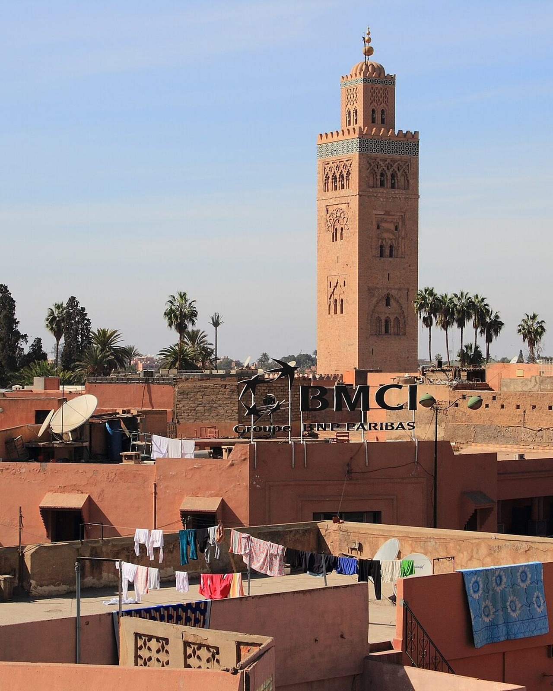
V9 · musique de fondEdvard-Grieg-Lyric-Pieces-Op-65 -No-6-Wedding-Day-at-Troldhaugen.ogg — Edvard Grieg, « Jour de noces à Troldhaugen », extrait de 95 sInterprète : Harald Vetter · Licence : CC BY 4.0Source Wikimedia Commons 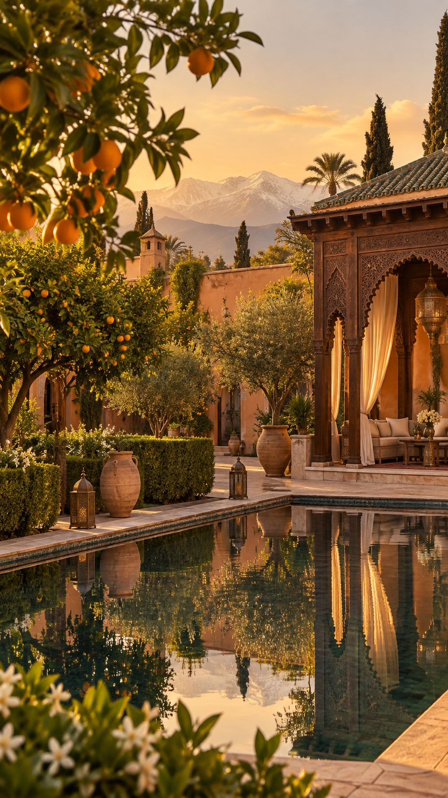
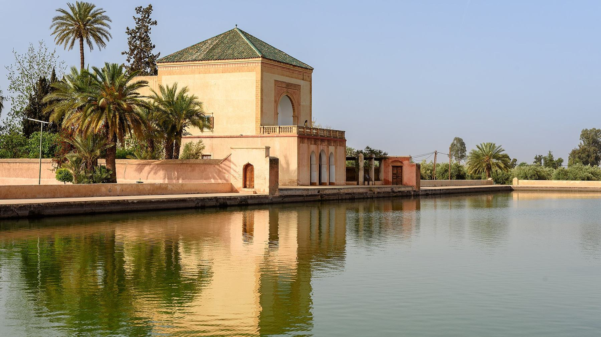
← Retour au site